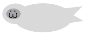

Hello there, and welcome to my collection! I love seals, and wanted to show the many beautiful pups of the sea that are out there. Scroll, comment, do whatever, the only rule here is to have fun!
 .
.